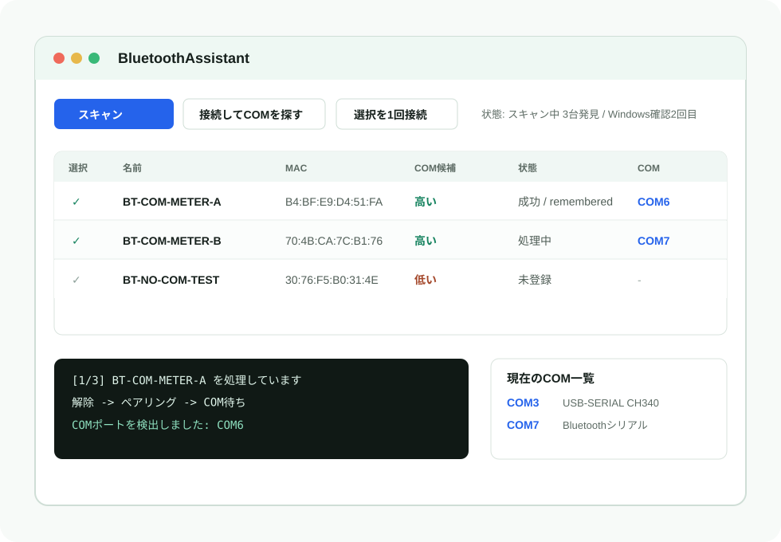

Progressive Scan
スキャン完了を待たず、発見したBluetooth候補から順に一覧へ表示します。
Windows Bluetooth機器を見つけた順に一覧へ出し、選んだ機器をCOMが出るまで接続確認します。 非エンジニアでも状態とログを追える、Python + Tkinter製のCOM接続支援ツールです。
対象はWindows側のCOMポート作成までです。BLE GATT / DFU / OTAの転送処理は実行しません。

スキャン完了を待たず、発見したBluetooth候補から順に一覧へ表示します。
チェックした機器を順番に処理し、COMが出ない機器でも最大試行回数で止まります。
一覧で選んだ1台だけを、ボタンまたは右クリックから1回だけ接続確認できます。
USB書き込み用COMとBluetooth経由COMを同じ画面で確認できます。